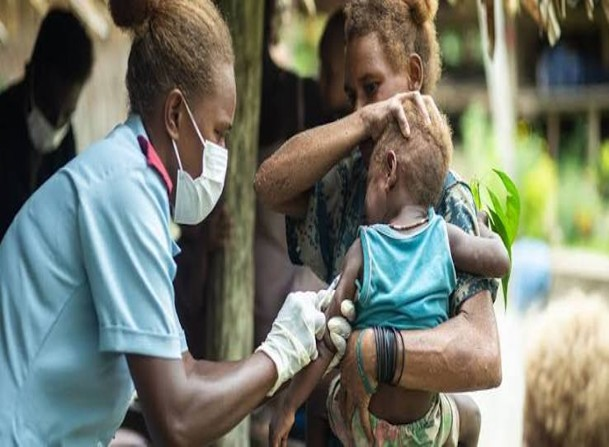

Africa

Working together to improve health across the African Region.
WHO’s work in Africa is guided by the WHO Regional Office for Africa, based in Brazzaville, Republic of Congo. The Regional Office supports Member States across the continent in improving health services, preventing disease and responding to public health emergencies.
Uganda is one of the countries served by the African Region. The WHO Country Office in Uganda works closely with the Ministry of Health, and benefits from regional guidance, shared experience and technical support from neighbouring countries.
Regional Priorities
- Strengthening national health systems and universal health coverage
- Preventing and controlling communicable diseases such as malaria, tuberculosis and HIV/AIDS
- Preparing for and responding to outbreaks and emergencies
- Improving maternal, newborn and child health
- Expanding immunization and access to essential medicines
Uganda and the Region
Because diseases do not respect borders, cooperation between Uganda and its neighbours is essential. Regional surveillance, joint outbreak response and the sharing of health data help protect communities on both sides of the border.